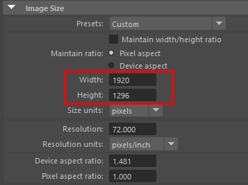
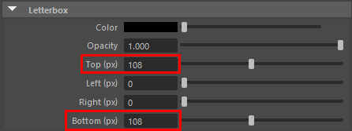
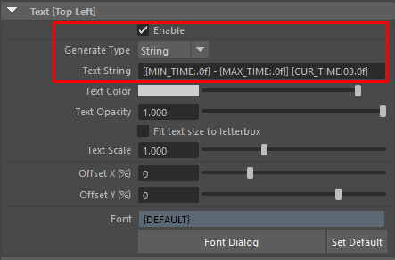
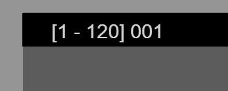

Letterboxの設定方法¶
概要¶
レターボックスを使う際の、解像度の計算や各種設定方法を紹介します
画面の上下に、
10%の割合でレターボックスを表示させますPlayblastで出力するまでの手順を紹介します
RenderOverrideノードを作成しておいてください
手順¶
まず、ResolutionGateの”解像度”を確認します
基本的に、最終レンダリングする時の解像度か、その倍率になります
今回は
1920 x 1080とします
レターボックスを画面の上下に10%ずつ加えるため、先ほどの解像度の高さを
1.2倍します計算結果は
1296(px)になります
RenderSettingsのImageSizeに、先ほどの解像度(
1920 x 1296)を設定します(レターボックスの表示位置はResolutionGateが基準になっているため、解像度の設定が必要になります)
RenderOverrideノードの、レターボックスの Top と Bottom アトリビュートの値を、それぞれ
108に設定しますレターボックスの幅は、RenderSettingsの解像度の値を基準に計算されます
1296の値を基に、上下に108分ずつレターボックスを表示させます(※ResolutionGateの高さの比率に基づいて表示されます)

RenderOverrideノードの
Text Stringアトリビュートに表示させたいテキストを入力し、レターボックス上に文字が表示されるか確認します文字の大きさをレターボックスの高さに合わせたい場合は、
Fit text size to letterboxアトリビュートを on にします必要に応じて
Text ScaleやOffsetアトリビュートを調整してください
カメラの
Overscanアトリビュートを1に設定しますこの設定をすることで、Playblast時にResolutionGateの枠でビューが切り抜かれます(AfterEffectsなどの編集ソフトで切り抜き作業を行わずに済みます)

Playblastのオプションを開き、”Display size”アトリビュートを
From Render Settingsに設定します
(他のオプションは自由に設定してください)¶
オプションダイアログの
PlayblastもしくはApplyボタンをクリックし、Playblastを実行します出力された動画を確認してください